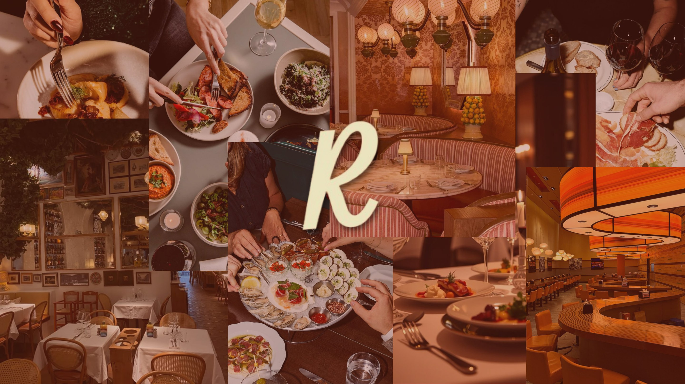
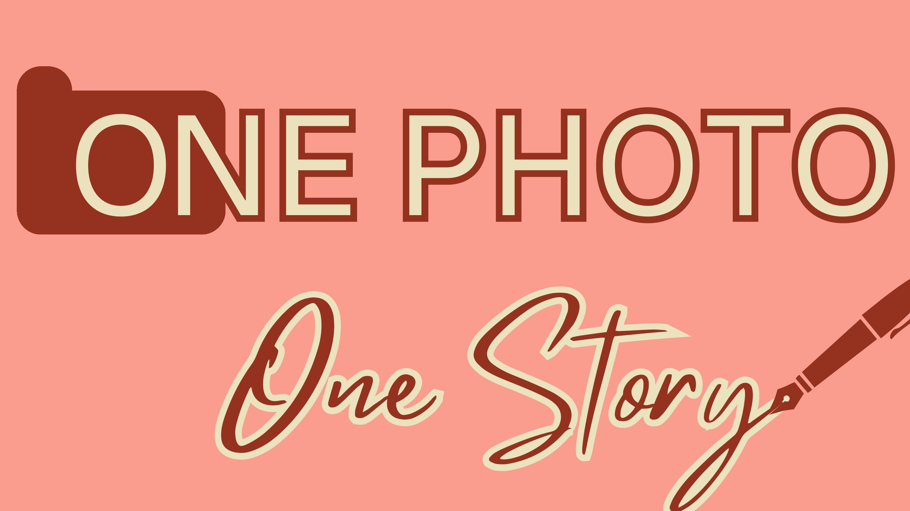
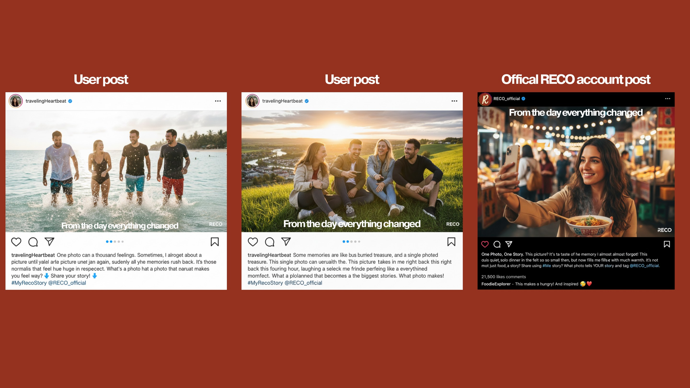

Reco
A social-first system that turns recommendations into stories worth following.

From utility to community.
Reco needed to become more than a place to save recommendations. The brief called for a reason to participate—and a media system capable of turning individual discoveries into collective momentum.

People trust the story around a place.
A recommendation becomes persuasive when it carries a point of view. That made real voices, not polished brand claims, the campaign’s most valuable media.
Design for the handoff.
A six-month social and influencer framework gives every channel a role: spark a discovery, invite a response, then pass the story back to the community through user-generated content.

A plan built to keep moving.
The final client pitch connected content cadence, creator participation and narrative guidance into one media-led platform for engagement and app adoption.
From thought
to touchpoint.
- Media strategy
- Six-month content plan
- Influencer framework
- Campaign copy
- Live client pitch
“Community is not a campaign aesthetic. It is a behavior the system has to make easy, visible and rewarding.”